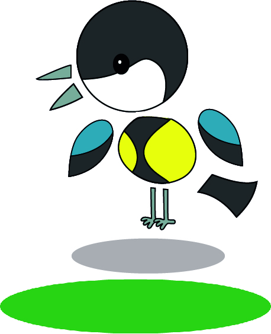
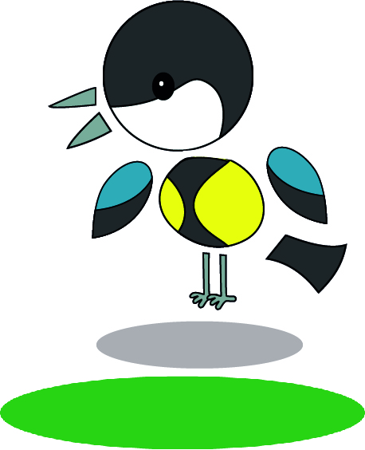

Met behulp van het programma Animate van Adobe heb ik onderstaande animaties gemaakt. Voor deze opdracht moest je een object, dier of ding kiezen om te laten bewegen. Hiervoor heb ik een koolmees gekozen. Door deze animaties op verschillende volgordes in één beeld achter elkaar te zetten krijg je een natuurlijk beeld van de manier waarop een vogeltje beweegt. De bewegingen zijn gebaseerd op de bewegingen van een observatie van een echt vogeltje.
 
